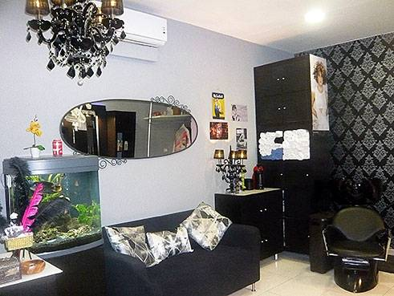
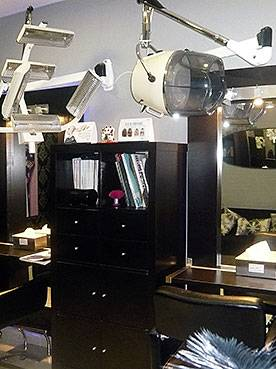

|

|
| |
tractament de queratina
tractament d'hidratació
tractaments capilars...
greix, caspa
tractaments
de
shock
per
a
la
caiguda
del
cabell
metxes, reflexos
i moldejats
tall de cabell
unisex: home, dona, nenes i nens
manicures i cera
facial unisex
promocions de
productes capil·lars per a l'estiu |
| |
horari
-hores
convingudes- :
de
dilluns
a
dimecres
de
9
del
matí
a
1
del
migdia
i
de
2/4 de
4
a
7
de
la
tarda
(de 09.00 a 13.00 i de 15.30 a 19.00 h.)
dimarts
de
2/4
de 4 a
7 de la tarda (de
15.30 a 19.00 h.)
al matí tancat
dijous i divendres de 9 del matí a
7 de la tarda (de
09.00 a 19.00 h.)
dissabtes de 8 del matí a 1 del migdia
(de
08.00 a 13.00 h.) |
|

|